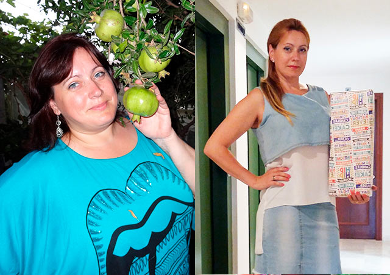
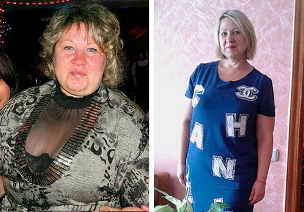

Ein revolutionäres Mittel zur Gewichtsreduktion
Vera Müller hat nach der Geburt ihres Kindes 14 kg in nur einem Monat mit einem
einfachen Trick verloren. Darüber redet sie Heute mit uns!
Sonja Scholz: In unserem Studio diskutieren wir heute Abend über die schockierenden Ergebnisse der Gewichtsabnahme, die kaum zu ignorieren sind.
Unser heutiger Gast ist nämlich Vera Müller, die mit ihrem reichen Repertoire an Popsongs schon oft auf den Titelseiten zu sehen war.
Mit einer Körpergröße von 160 Zentimetern schaffte es Vera Müller nach der Geburt ihres Kindes auf schockierende 70 Kilogramm zu steigen, was insgesamt 14 Kilo mehr als ihr übliches Gewicht ist. Unerwartet für alle war, dass Vera es blitzschnell geschafft hat wieder zu ihrem gewohnten Gewicht zurückzukehren.
Vera hat ihren einfachen Abnehmtrick bis zu diesem Moment an für sich bechalten!
Heute Abend hat Vera Müller in unserer Show endlich behalten, offen darüber zu reden, wie genau sie es geschafft hat, die unerwünschten Pfunde loszuwerden.
Sonja Scholz: Hallo Vera, ich muss zugeben, dass du fantastisch aussiehst! Ich weiß nicht, wie viel du darüber mitbekommen hast, aber es schweben bereits Gerüchte darum, wie du es plötzlich geschafft hast, einen so perfekten Körper zu bekommen. Immerhin ist es eine große Sache 14 Kg in einem Monat abzunehmen. Kannst du uns sagen wie du das in so einer kurzen Zeit geschaft hast?
Vera Müller: Grüße an dich und deine Zuschauer. Lasst es mich euch gleich sagen, ich war noch nie dünn und wollte es auch nie sein. Aber im letzten Jahr geritten die Sachen ausser Kontrolle. Ich hatte diese Entbindung und ich habe meinen Körper einfach vernachlässigt. Nach der Geburt meines Kindes schaute ich in den Spiegel und war erlich gesagt fassungslos. Ich wusste, dass ich diese Pfunde loswerden musste, wenn ich mich wieder wohlfühlen wollte.
Sonja Scholz: Ich muss zugeben, dein Ergebnis kann sich sehen lassen, du hast jedes Recht, dich gut zu fühlen, so siehst du auch aus! Kannst du uns sagen, ob es wahr ist, dass du ohne Training und Diät abgenommen hast?
Vera Müller: Danke dir für die schönen Worte. Solche Komplimente schmeicheln mir immer. Natürlich stimmt das. Ich habe ohne Chemie oder anstrengendem Training abgenommen.
Sonja Scholz: Warte mal, ist das eine neue Diät oder ist es plastische Chirurgie?
Vera Müller: Natürlich nicht, weder das eine noch das andere. Diäten und ich waren schon immer auf Sie, und Training ist etwas, wofür ich neben meinem vollen Terminkalender wirklich keine Zeit hatte. Irgendwie hatte ich mich damit abgefunden, dass ich für immer dick bleibe, denn ohne Training und Ernährung gibt es keine Ergebnisse. Ich wäre wahrscheinlich verzweifelt geblieben, wenn meine Freundin mir keine Alternative empfohlen hätte - . Das sind eigentlich Kapseln zur Gewichtsreduktion. Als sie mir erzählte, dass sie ihr Ergebnis mit diesen Kapseln erreicht hat, habe ich von Herzen gelacht. Ich war total skeptisch und sie muss ungefähr 10 Tage gebraucht haben, um mich zu überzeugen es zu versuchen. Am Ende hat sie mich schließlich dazu überredet nach zu lassen und es auszuprobieren. Seitdem ist mein Leben nicht mehr dasselbe.
Vera Müller: : Klingt komisch, aber, ja. , soweit ich feststellen konnte, beschleunigt durch seine Wirkung den Stoffwechsel, und auf diese Weise erleichtert er die Gewichtsabnahme. Nach der ersten Woche des Experimentierens fühlte ich mich in gewisser Weise buchstäblich leichter. Ich habe meine Ernährung überhaupt nicht umgestellt, ich habe das Gleiche gegessen wie vorher, und irgendwie nahm ich weiter hin ab. In der ersten Woche habe ich 3,5 kg abgenommen. Ich war ehrlich gesagt geschockt. 2-mal täglich 1 Kapsel ein und so ein Ergebnis! Ich konnte es einfach nicht glauben. Wie die Zeit verging, fing ich an, über dieses Mittel zu recherchieren und fand dabei heraus, dass es sich um einen Bio-Kräuterkomplex handelt, wodurch mir vieles klarer wurde.
Sonja Scholz: Nicht zu glauben! Ich muss wirklich zugeben, dass deine Veränderung drastisch ist, als ob du gar nicht schwanger warst.
Vera Müller: Ich muss zugeben, dass du nicht die Erste bist, die mir das sagt, aber danke trotzdem. Es ist wirklich ein wunderbares Gefühl, so etwas zu erreichen. Es sind etwa 3 Monate vergangen, seit ich abgenommen habe und seitdem nehme ich nicht mehr ein. Mein Gewicht ist immer noch das gleiche. Die Kilos kamen nie zurück, worüber die Leute immer lässtern wollen. Dies ist das erste Mal, dass ich ein wirklich zuverlässiges Ergebnis von einem Produkt zur Gewichtsreduktion bekam. Auf jeden Fall habe ich ein paar Packungen zu Hause, nur für den Fall.
Sonja Scholz: Jetzt hast du uns alles erzählt außer woher du den hast. Können wir das auch wissen, oder ist es ein Geheimnis?
Vera Müller: Die erste Packung hat mir eine Freundin gebracht. Die zweite habe ich auf der offiziellen Website des Herstellers bestellt, was ich natürlich jedem empfehlen würde. Die Lieferung ist schnell, und die Qualität ist garantiert. Alles was ich darüber sagen kann, ist ein großes Dankeschön an dieses Produkt, da es mir und Monate hartes Training für einen Monat guten Aussehens erspart hat.
Wir haben einen Ernährungsberater gefragt, was er von dieser schockierenden Geschichte von Vera Müller hält:
Heinrich Hesse - Doktor der Medizin, Ernährungsberater, Professor
und Autor zahlreicher Bücher zur Gewichtsreduktion.
„Ich bin Spezialist mit über 30 Jahren Berufserfahrung und glauben Sie mir, wenn ich
Ihnen sage, dass populäre Diäten wie kalorienarme Diäten, Monodiäten und andere
Qualmethoden des Stoffwechsels nur Ihnen und Ihrer Gesundheit schaden. Es ist
unbestreitbar, dass diese Diäten nur eine sofortige Lösung bieten, aber für eine
dauerhafte Lösung braucht man etwas ganz anderes.
Der natürliche Pflanzenkomplex „ “ enthält
natürliche Inhaltsstoffe, die Stoffwechselprozesse bis zu 5-7 Mal beschleunigen. Deshalb
gibt
der
Körper alle angesammelten Fettreserven sehr schnell frei und stoppt so die Entwicklung
neuer. Zur Zeit sehe Ich als die einzige effektive
und gleichzeitig gesunde Möglichkeit, zusätzliche Pfunde zu verlieren.
Das Ergebnis einer einmonatigen Studie an einer Gruppe von 17 übergewichtigen
Personen zeigte Folgendes:
1. Bei der gesamten Probandengruppe wurde ein starker Gewichtsverlust festgestellt. 2.
Deutliche Verbesserung der Stoffwechselfunktionen von Leber und
Bauchspeicheldrüse. 3. Deutliche Verbesserung der Stoffwechselprozesse im Körper.
Ein positives Ergebnis ist auch unabhängig von Geschlecht oder Alter mehr als
garantiert. Der durchschnittliche Gewichtsverlust auf wöchentlicher Basis variiert
zwischen 1,5 und 3 kg.
Abschließend möchte ich betonen, dass es viel einfacher ist, Übergewicht auf natürliche und gesunde Weise zu bekämpfen, als die Konsequenzen instabiler und ungesunder Methoden zur Gewichtsabnahme wie zum Beispiel Bluthochdruck, Diabetes, Verstopfung von Blutgefäßen zu tragen. Dies sollte in der Regel für jeden vernünftigen Menschen logisch sein.
Ich trinke ihn schon 4 Monate regelmäßig. Er half mir anfangs mit über 34kg. Das ist ein ganz natürliches Präparat. Meine Freunde wissen übrigens auch schon lange von ihn, also ist es nicht nur Ihr Geheimnis.

Für mich war eine echte Rettung. Vor einigen Jahren hatte ich einen Unfall, nach dem ich mich 8 Monate lang nicht bewegen konnte. Ich lag im Bett 8 Monate und habe 32 kg zugenommen! Nach einiger Zeit begann ich mit dem Stöcken zu laufen, aber es war keine körperliche Anstrengung möglich, da ich noch relativ schwach war und das Gewicht die ganze Situation noch verschlimmerte. Eine Freundin war gerade aus Frankreich zurückgekehrt, als Sie mir diese Kapseln zur Probe gab. Dort hat sie probiert und Ergebnisse erzielt. Ich habe natürlich nichts erwartet, sondern mich einfach entschieden es zu versuchen. Ich habe eine Kapsel am Tag eingenommen. Die ersten Veränderungen habe ich nach einer Woche bemerkt, und es ist nicht so, dass ich viel abgenommen habe, aber ich hatte einfach das Gefühl, dass mein Körper irgendwie anfing schneller zu arbeiten, die Nahrung schneller zu verdauen usw. Körperlich fühlte ich, wie sich mein Stoffwechsel beschleunigte. In den ersten 2 Wochen habe ich 4 kg abgenommen, ohne in meinem Leben etwas geändert zu haben außer den Kapseln zu trinken! Die restlichen 26 kg waren ungefähr im Bereich von 3 Monaten weg. Wer sagt, dass 3 Monate lang sind, der sollte zumindest etwas versuchen! Ich bin so froh. Ich glaube, ich hatte Glück, dass mein Freund von erfuhr. Ansonst wüsste ich nicht, was ich machen würde. Wahrscheinlich würde ich immer noch 109 kg wiegen.
Ich fing an ihn zu trinken. Ich aß alles, was ich wollte, während ich gleichzeitig 9 Pfund abnahm. Ich glaube, dass das beste Produkt unter den besten zur Gewichtsreduktion ist, da ich keine Zeit für Fitnessstudios habe..So eine Lösung ist für Leute wie mich einfach perfekt!
Nach langer Krankheit habe ich viele Pfunde zugenommen. Ich habe Diäten und Sport und viele Ergänzungen ausprobiert.. Aber dann entschied ich mich, auszuprobieren. Ich habe eine Packung online gekauft. Und sie hat es nicht bereut. Nachdem ich diese Packung beendet hatte, verlor ich 3 Kilogramm. Ich möchte noch 5 Packungen kaufen. Da bleiben noch Extrakilos übrig. Ich empfehle dieses Nahrungsergänzungsmittel.
So habe ich mich seit 3 Jahren nicht gefühlt! Ihr könnt euch gar nicht vorstellen, was für ein Glücksgefühl das ist – Ich fühle mich wieder selbstbewusst und schön. 3 Monate und 26kg abgenommen!
Jetzt ist klar, warum die Stars alle so dünn sind, sie trinken wahrscheinlich diesen das ganze Jahr.
Ich ging auf die Webseite, um mehr über zu lesen. Es ist eine sehr angenehme Überraschung, eine Aktion, wahrscheinlich als ein Teil der Saison, weil der Sommer bald kommt. Ich habe sechs Packungen bestellt. Werden wir mal sehen.
Ich bin 47 Jahre alt und wiege 78 kg. Ich habe verschiedene Diäten ausprobiert, aber die Kilos kahmen immer wieder zurück. Vor drei Monaten, nach der zweiten „Low-Carb“-Diät, gab es wieder keine Ergebnisse. In 3 Wochen nahm ich weitere 7 kg zu! Ein Albtraum. Dieses Produkt muss ich unbedingt probieren!
Ich versuche schon seit langem, Gewicht zu verlieren, und es ist mir erst vor kurzem mit gelungen . Probieren Sie diesen Kapseln unbedingt!
Letztes Jahr hat mich eine Ernährungsberaterin zu diesen Kapseln beraten. Die Gewichtsprobleme begannen mit 46, jetzt bin ich 57, aber mein Gewicht ist jetzt fast normal. Ich habe bemerkt, dass ich viel besser schlafe und die Kopfschmerzen, die mich ständig störten, sind vollständig verschwunden, als ich mit der Einnahme von begann . Ich habe ihn wieder von der gleichen Webseite bestellt.
